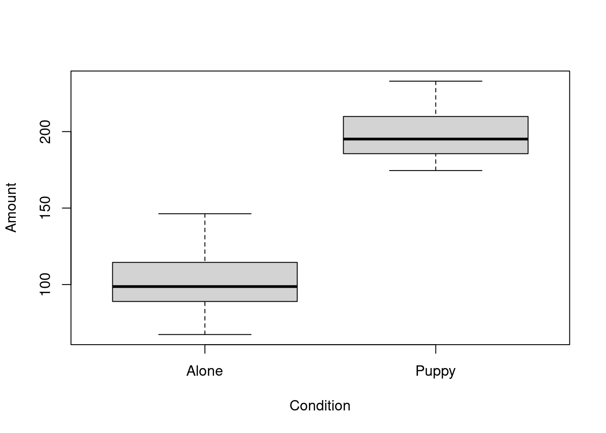
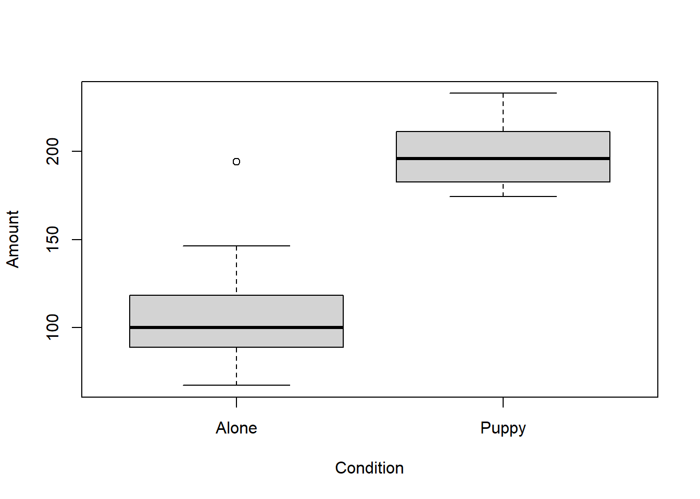

Tabular Data
In this module we begin to work with complete tables of data, and learn how to make informative graphs.
We will start by getting our scientific research data into RStudio. Commonly, we first enter our data into Excel for cleaning and organising, and save it out as a csv (comma separated values) file. We then import the file into R for data analysis. We will provide the csv file to be used with this module.
Note that in this document we are primarily using Base R (the R functions that are automatically available in RStudio). These Base R functions are simple to work with, and are a good way to get familiar with R. In later modules, we will meet some more sophisticated R tools which, while more complicated, can also be more efficient.
Work carefully through each of the sections below, confirming that all your outputs match ours. When you feel completely comfortable with the content, we recommend moving on to Chapter 3 of R for Data Science: Data Visualisation (https://r4ds.had.co.nz/data-visualisation.html) which covers advanced plotting with the ggplot library.
When you have completed this module, you should be ready to produce the graphs and figures you will need for your in-course research projects. If you run into any problems or have any questions, email us, or drop us a message in the R4SSP class team on MS Teams.
Preparation - Do this very carefully
Document organisation is vitally important. We suggest that you keep a separate folder for each R4SSP module. To do this, you can set up a formal RStudio project (see for example https://support.rstudio.com/hc/en-us/articles/200526207-Using-Projects). But if you don’t feel quite ready for that, you can just collect your script file and data files together in a folder. Proceed as follows:
Launch R Studio
Following the procedure from Using a Script File in Module 1 - Intro to R and RStudio, create a script file and save it to your desktop or other location where you will be able to find it.
Quit R Studio
Locate the script file you just made (it will have a .R file suffix).
Create a new folder (name it something sensible) and place the script file in it.
Retrieve the sample csv data file used in this module from the course Google Drive shared folder . Place the csv file into the folder with your script file.
Open the folder and double-click on your script file to open it in RStudio.
If you set things up this way, RStudio will be able to find your data file for the next step – importing data.
Importing a data file
The provided file r4ssp_donations_data.csv contains the (fictitious) results of a study designed to explore the factors which affect donations to street-corner charity collectors. Fifty student researchers each spent four hours at one of 50 randomly selected positions on George Street, collecting donations for Blind Low Vision NZ Guide Dogs, an organisation that raises and trains service dogs. Twenty-five of the collectors were accompanied by guide dog puppies; the other 25 were alone. Assignment to the Puppy or Alone conditions was done randomly. Each researcher recorded the total amount of money collected during their four hour shift. The start of the data file is shown below.
We will import this file into R for some preliminary data analysis.
To import a csv file into R we can use the function read_csv. Like the R functions we used in Module 1, read_csv accepts an argument between its round brackets. The argument is the name of the input file. Because the name of the file is a string, we surround it with double quotes. We will therefore say:
read_csv("r4ssp_donations_data.csv")
However, we are not quite ready to run this command. The function read_csv is not part of base R (the R functions that are automatically available in RStudio). It is part of a library, a set of additional functions that can be loaded into RStudio. Function read_csv is part of the readr library, and we load it with the library command. We will therefore need two lines of code:
library(readr)
read_csv("r4ssp_donations_data.csv")
Note that you only have to execute library once each time you open RStudio. After loading a library, it is available for the remainder of your R session (i.e. until you quit RStudio) and you can call its functions as normal.
Import and check your data
Type the following lines into your script file. Execute your commands as you did in the previous module.
library(readr)
read_csv("r4ssp_donations_data.csv")
#> Rows: 50 Columns: 3
#> -- Column specification --------------------------------------------------------
#> Delimiter: ","
#> chr (2): Collector, Condition
#> dbl (1): Amount
#>
#> i Use `spec()` to retrieve the full column specification for this data.
#> i Specify the column types or set `show_col_types = FALSE` to quiet this message.
#> # A tibble: 50 x 3
#> Collector Amount Condition
#> <chr> <dbl> <chr>
#> 1 C1 190. Puppy
#> 2 C2 178. Puppy
#> 3 C3 178. Puppy
#> 4 C4 210. Puppy
#> 5 C5 188. Puppy
#> 6 C6 199. Puppy
#> 7 C7 180. Puppy
#> 8 C8 195. Puppy
#> 9 C9 186. Puppy
#> 10 C10 233. Puppy
#> # ... with 40 more rows
NB: When you try to execute this code, you may receive an error message: Error in library(readr) : there is no package called ‘readr’. If this happens it means that the functions in library readr have not yet been installed on your computer. Please see Appendix 2 - Installing Packages at the end of this handout for instructions.
When imported into R, the data from the csv file are stored in an R object called a tibble. A tibble is a slightly enhanced version of a core R object called a data frame. Tibbles and data frames are simply tables, organised into rows and columns. The columns have names, and each row of the csv file becomes a row in the data frame.
When you call read_csv, passing in a file name, R reads in the file, converts it to a tibble, and displays it in the console. The columns have the same names as in the csv file. We will see later that we can use the column names to explore specific properties of our data set.
R also gives you some information about how it understands the contents of the file it has imported. In the console you will see the words Parsed with column specification: followed by a list of the imported columns.
Each column header is associated with a value col_double(), or col_character(). These indicate what kind of data R identified in the input file. Columns that are col_double are numbers; columns that are col_character are strings. The same information is shown where RStudio prints the imported data. Beneath each column header you will see dbl for numbers and chr for strings.
This is a good moment to pause and check that your data have been imported correctly. Data entry errors can cause R to make the wrong assumptions about your data. If you have a column of numbers that contains even one accidental alphabetic character (typos do happen) R will consider the whole column to be strings. Later, R will give the wrong results when you perform statistical analyses on these data (or it will refuse to perform them at all).
You will often also see files imported with the function read.csv (note the . instead of the _ ). This is the base R function for importing files. To use read.csv you don’t need to load a library first, but R doesn’t generate any information about how it has parsed the data in the columns. You can use the function str to get this information. Google for details.
With both read_csv and read.csv R will import the file and display its contents in the console, but this is not quite enough. We want R to store the data in a named variable so that we can refer to it later (i.e., perform analyses on it). We do that with the assignment operator, as we did in our previous module. For example, we can say:
puppy_donations_data <- read_csv("r4ssp_donations_data.csv")
Then, we can refer to this whole dataset any time with puppy_donations_data.
Enter and run these commands:
# Load the library before the first time you call read_csv
library(readr)
# Read a csv file into R. Store the result in a named variable
puppy_donations_data <- read_csv("r4ssp_donations_data.csv")
#> Rows: 50 Columns: 3
#> -- Column specification --------------------------------------------------------
#> Delimiter: ","
#> chr (2): Collector, Condition
#> dbl (1): Amount
#>
#> i Use `spec()` to retrieve the full column specification for this data.
#> i Specify the column types or set `show_col_types = FALSE` to quiet this message.
# As always in R, we can display the contents of a variable by simply typing its name.
puppy_donations_data
#> # A tibble: 50 x 3
#> Collector Amount Condition
#> <chr> <dbl> <chr>
#> 1 C1 190. Puppy
#> 2 C2 178. Puppy
#> 3 C3 178. Puppy
#> 4 C4 210. Puppy
#> 5 C5 188. Puppy
#> 6 C6 199. Puppy
#> 7 C7 180. Puppy
#> 8 C8 195. Puppy
#> 9 C9 186. Puppy
#> 10 C10 233. Puppy
#> # ... with 40 more rows
Perform descriptive analyses on groups
We often wish to summarise our dependent variable for all the members of an experimental group. For example, in this study we might want to find the mean amount donated for just those collectors in the Puppy group. To do this, we first take a subset of the data frame. That is, we separate out only those rows that are in the group of interest. Then we can summarise individual columns exactly as we did above, operating on our partial data frame.
To take a subset of rows from a data frame, use function subset. This function takes two arguments: first, the name of the data frame from from which you are separating out rows; second, the criterion you wish to use to select your subset. In this example we wish to select out all the rows for which the Condition column value is “Puppy”. In R we describe this criterion with Condition == "Puppy". Note the double equal sign ==. This is very important. A single equal sign here means something else, and will not work at all. The complete code to select all the collectors who had puppies is:
subset(puppy_donations_data, Condition == "Puppy")
#> # A tibble: 24 x 3
#> Collector Amount Condition
#> <chr> <dbl> <chr>
#> 1 C1 190. Puppy
#> 2 C2 178. Puppy
#> 3 C3 178. Puppy
#> 4 C4 210. Puppy
#> 5 C5 188. Puppy
#> 6 C6 199. Puppy
#> 7 C7 180. Puppy
#> 8 C8 195. Puppy
#> 9 C9 186. Puppy
#> 10 C10 233. Puppy
#> # ... with 14 more rows
As always, it will make our code tidier to save the output in a named variable for later use.
puppies_only <- subset(puppy_donations_data, Condition == "Puppy")
puppies_only
#> # A tibble: 24 x 3
#> Collector Amount Condition
#> <chr> <dbl> <chr>
#> 1 C1 190. Puppy
#> 2 C2 178. Puppy
#> 3 C3 178. Puppy
#> 4 C4 210. Puppy
#> 5 C5 188. Puppy
#> 6 C6 199. Puppy
#> 7 C7 180. Puppy
#> 8 C8 195. Puppy
#> 9 C9 186. Puppy
#> 10 C10 233. Puppy
#> # ... with 14 more rows
We can select columns from our new partial data frame and compute summary statistics for a column of interest just as we did above:
mean(puppies_only$Amount)
#> [1] 197.9371
sd(puppies_only$Amount)
#> [1] 16.53945
R has a very rich system for defining selection criteria when using functions like subset. In addition to checking whether one value equals another with ==, as above, you can use all the usual logical comparisons like less than, greater than, less than or equal to, etc.
| Less than |
< |
| Less than or equal to |
<= |
| Greater than |
> |
| Greater than or equal to |
>= |
| Not equal to |
!= |
For example, we could use any of the following as the second condition of our call to subset:
| Amount < 100 |
Select all rows that have Amount less than 100 |
| Amount >= 50 |
Select all rows that have Amount greater than, or equal to, 50 |
| Condition != “Puppy” |
Select all rows in which Condition is not equal to “Puppy” |
It is also possible to combine these logical operations. You could, for example, ask for only those rows where Condition was “Alone” and Amount was greater than 100. Google “R logical operations” to find out more.
In our next module, when we begin the use the tidyverse library, we will learn additional very efficient techniques for selecting subsets of interest from a large data set.
Time to Write Your Own Code
Repeat the analysis above, but summarise only those subjects in the Alone group (those collectors who had no puppies). Your results should be as shown below. Do not move ahead in this document until you can generate these values by using subset, $, mean, and sd. If you need help, let us know.
#> [1] "Mean: 105.8385"
#> [1] "Standard deviation: 26.5587"
Boxplots
We can see that the mean amount is higher for collectors who had puppies than for those who did not ($197.79 vs. $102.30). We can illustrate this difference graphically using a boxplot.
The R function boxplot accepts two arguments.
The first argument is the formula. This is a complex, yet very common, argument format for R statistical functions. The formula describes a linear model for a data set with the general structure: dependent or predicted variable ~ independent variables or predictors, using columns names from the data frame. The ~ (tilda) is read as “depends on” or “is predicted by”. For our example, we are interested in the way that Amount is dependent on the Puppy/Alone condition, so we specify our formula as Amount ~ Condition. We will see more complex examples of the formula argument later in the semester.
The second argument to boxplot is the data frame.
boxplot(Amount ~ Condition, puppy_donations_data)

Boxplots efficiently illustrate both the central tendency and the variability of a data set. Each grey box extends from the first quartile to the third quartile of its input values. The dark line across the box is at the median. The two thin lines outside the qrey box show the values of the minimum and maximum scores, excluding extreme outliers. If extreme outliers are present, they are shown as asterisks.
The boxplot function actually has many optional arguments for things like adding legends and formatting plot axes, and calls to this function can get quite elaborate. Because of this, it is common to see the function called with its arguments named (as with stringsAsFactors, above). For example:
boxplot(formula = Amount ~ Condition, data = puppy_donations_data)

Some more R Markdown
Let’s look more closely at how you can use R Markdown to generate well-formatted research reports.
1. Following the procedure described in Handout 2 - Get Started with R, create an R Markdown file
2. The new file contains some template text. In the second shaded block replace the command summary(cars) with some of the code you have just written. Be careful not to delete either of the lines that begin with ```. Those symbols signal to RStudio that the contents is R code, not text.
For example, I made this replacement:
3. You might also want to replace some of the text (in the non-shaded areas), to match your new code.
4. Knit the document (click the Knit button). Wait while R processes the document. It will generate output to the console, but you can ignore that for now.
5. Admire the result.
Exercise - R Markdown
- Figure out how to generate a Word document with R Markdown (Hint: look at the dropdown list beside the Knit button, by clicking the small triangle).
- Some lines in the text areas of the R Markdown template start with ##, and the text is coloured Blue. What does the ## do? What do you think prefacing a line of text with ### would do? Test your theory.
Appendix
Manual Data Entry in R
For extremely small data sets, you can manually enter tabular data into R. You create a vector for each data column using the combine function c, and then collect those vectors into a data frame:
countries <- c("Austria", "Brazil", "Canada")
capitals <- c("Vienna", "Brasilia", "Ottawa")
population_in_millions <- c(9, 211, 38)
geography_df <- data.frame(Country = countries,
Capital = capitals,
PopulationMillions = population_in_millions)
geography_df
#> Country Capital PopulationMillions
#> 1 Austria Vienna 9
#> 2 Brazil Brasilia 211
#> 3 Canada Ottawa 38
Installing Packages
When R is installed, it comes with a large set of commands, data structure, and functions which are together known as base R. Over the years, researchers and programmer have written thousands of additional functions and modules (called libraries) that you can use in your own R code. This third-party code is checked by moderators and, if it passes inspection, loaded onto an official R server in a file structure called a package. To use packages, you must first download them to your computer. They are placed in the same folders where base R was originally installed.
To access the functions in a package in your R code, you load the package using the library command, as we saw above with readr. You only need to download a package one time on any machine, but the library command must be executed at the start of each RStudio session (i.e. every time you launch RStudio).
To install a package, use the install.packages command passing the name of the package as the function argument. The name is a string so must be surrounded by double quotes. To use an installed package, use the library command, passing in the name of the package. Now that the package has been installed, R recognises it as an entity (like a variable) so you do not put double quotes around the package name in the library command.
For example, when you want to use function read_csv, contained in library readr:
# Download the reshape2 code to your machine
install.packages("readr")
# Load the library for the current session
library(readr)
Tidyverse
The tidyverse is a collection of packages (metapackage) that are an (opinionated) way of performing analysis in R and are all designed to operate nicely together. When tidyverse is installed it actually is a wrapper that installs the individual packages that make up the tidyverse core.
The tidyverse consists of a core set of packages to perform common tasks in data analysis and are ggplot2 (plotting), dplyr (data manipulation), tidyr (data tidying), readr (data importing), purrr (functional programming), tibble (a special type of data frame), stringr (common tasks for string manipulations), and forcats (dealing with factors)
# Download and install the packages of tidyverse
install.packages("tidyverse")
# load the tidyverse packages for the current session
library(tidyverse)
#> -- Attaching packages --------------------------------------- tidyverse 1.3.1 --
#> v ggplot2 3.3.5 v dplyr 1.0.7
#> v tibble 3.1.6 v stringr 1.4.0
#> v tidyr 1.1.4 v forcats 0.5.1
#> v purrr 0.3.4
#> -- Conflicts ------------------------------------------ tidyverse_conflicts() --
#> x dplyr::filter() masks stats::filter()
#> x dplyr::lag() masks stats::lag()
